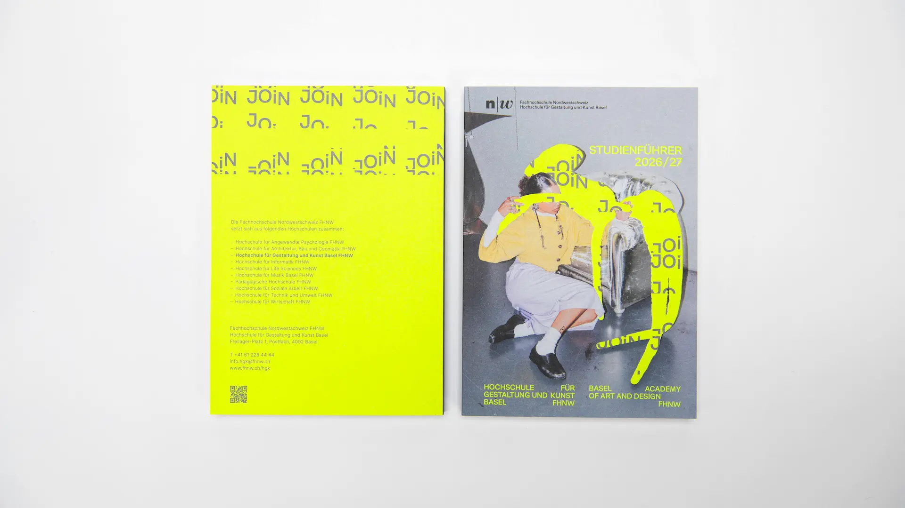
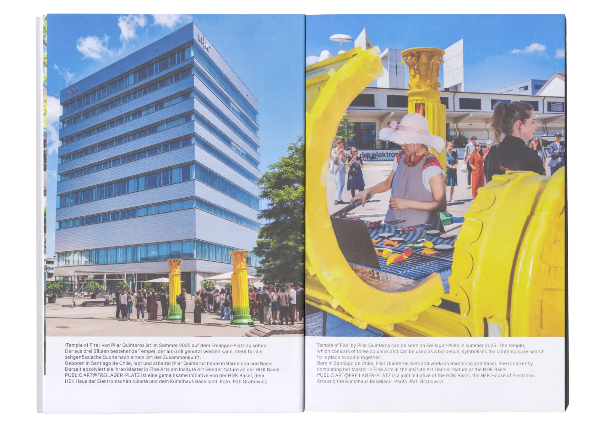
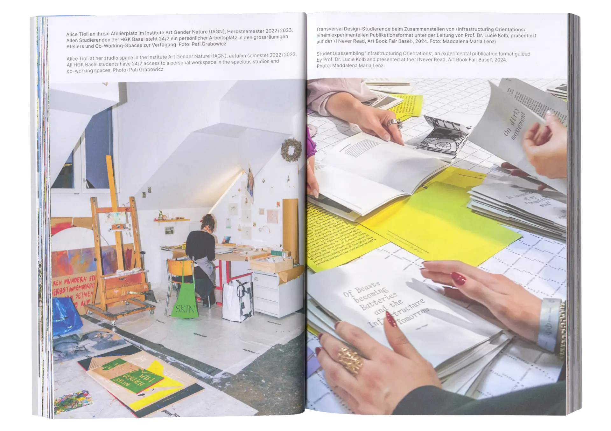
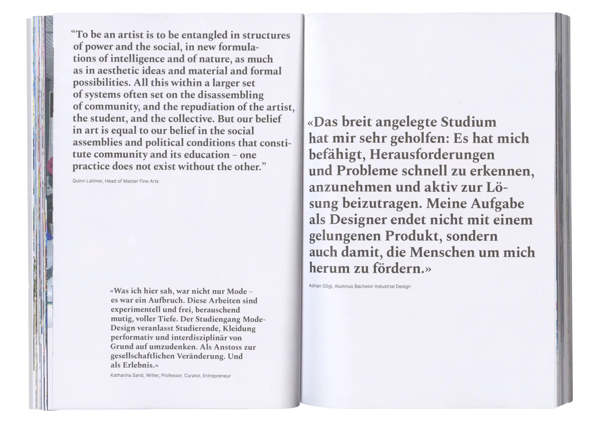
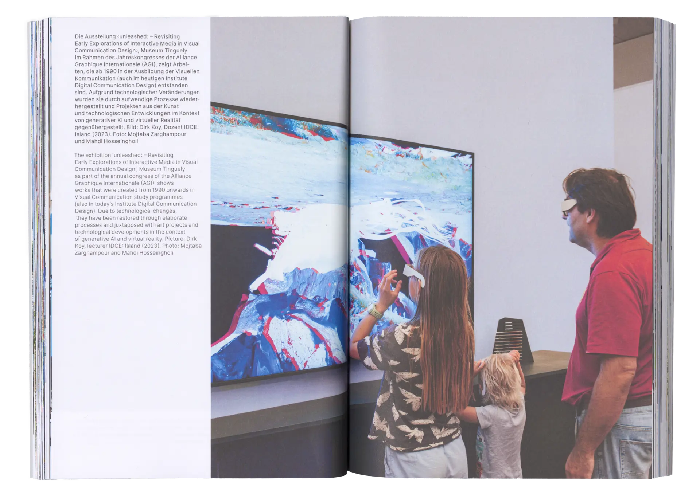
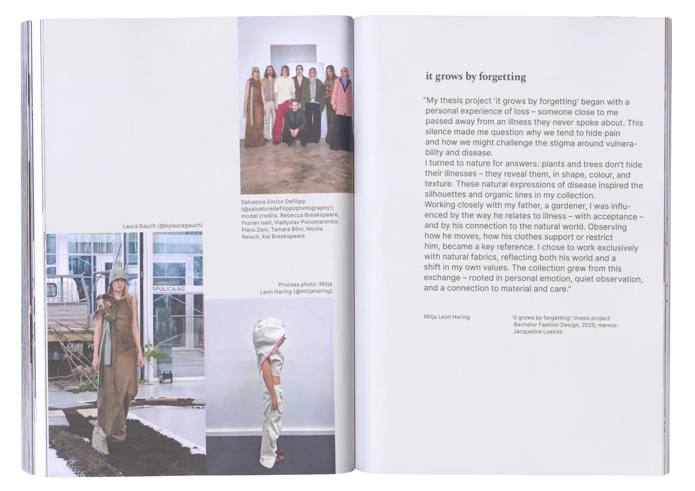
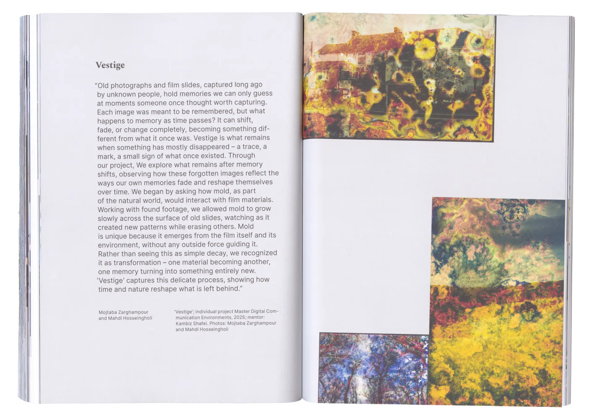
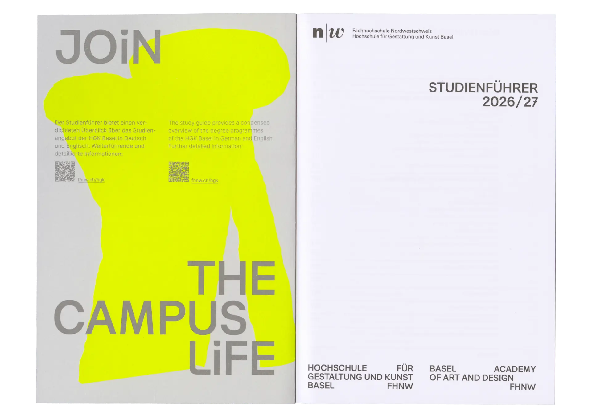
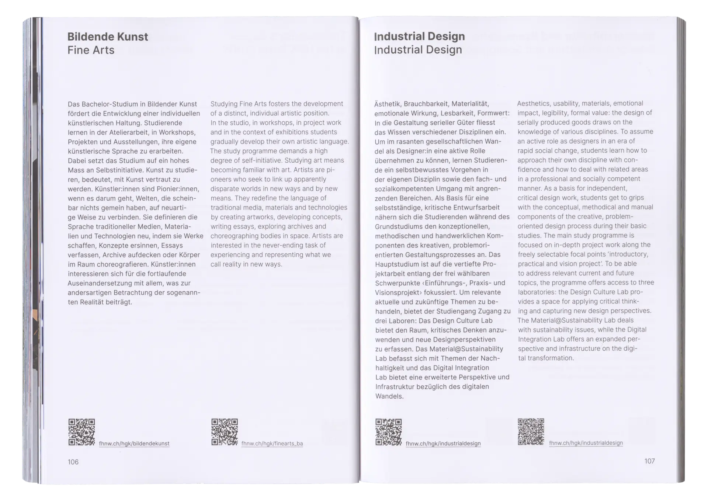

The HGK Basel study guide is part of the annual campaign and offers insights into the various degree programmes. Based on a predefined layout, I designed the typesetting and determined the arrangement of the image sequence.



The selection and arrangement of images and texts were developed in consultation with the communication department and the institutes.




Since the chapter on student projects was newly introduced, the design follows the existing layout while subtly expanding it with more dynamic elements.

